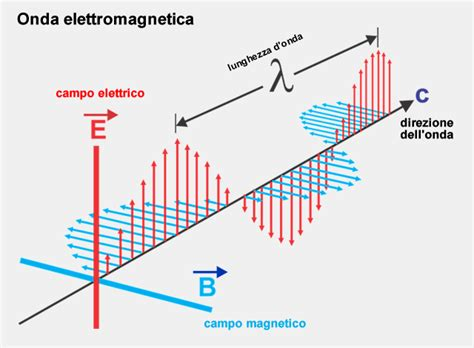
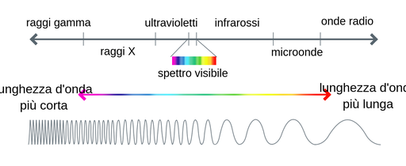
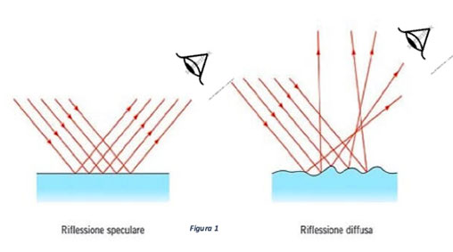
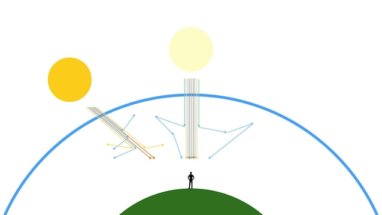
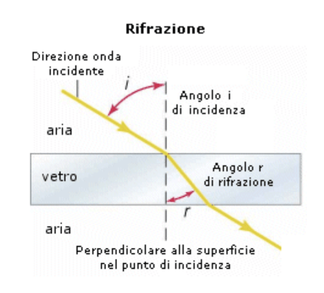
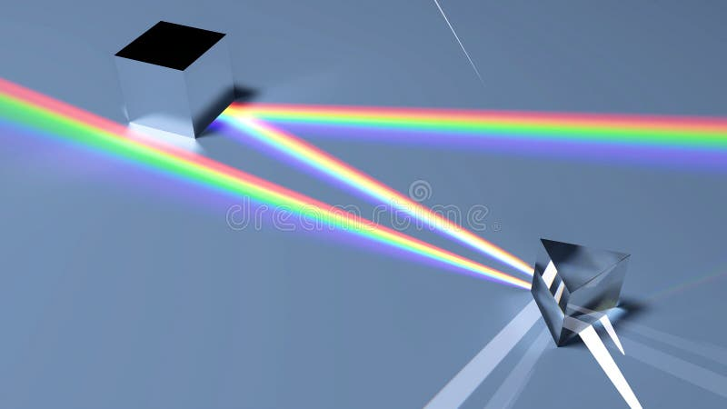
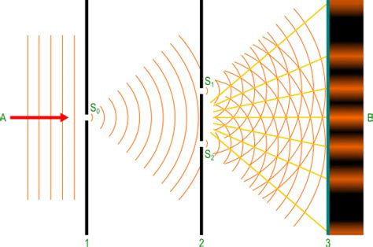

1. Che cos'è la luce
La luce è un'onda elettromagnetica trasversale: un campo elettrico $\vec{E}$ e un campo magnetico $\vec{B}$ oscillano perpendicolarmente tra loro e perpendicolarmente alla direzione di propagazione.
Nel vuoto tutte le onde elettromagnetiche si propagano con la velocità $c$, indipendentemente dalla frequenza. Questa velocità è una costante fondamentale della natura:
Relazioni fondamentali
La frequenza è la grandezza che identifica univocamente il tipo di radiazione: essa non cambia quando la luce passa da un mezzo a un altro. La lunghezza d'onda, invece, cambia perché cambia la velocità di propagazione nel mezzo (vedi sezione sulla rifrazione).
Dualità onda-corpuscolo
In fisica classica la luce è descritta come onda. In fisica moderna (fotonica e meccanica quantistica) l'energia elettromagnetica è scambiata in pacchetti discreti chiamati fotoni. L'energia di un fotone è $E = hf$, dove $h = 6.626 \times 10^{-34}$ J·s è la costante di Planck. I due modelli non sono in contraddizione: quello ondulatorio descrive la propagazione, quello corpuscolare descrive l'interazione con la materia.

2. Spettro elettromagnetico, luce visibile e colore
Lo spettro elettromagnetico si estende dalle onde radio (lunghezze d'onda da kilometri a centimetri) fino ai raggi gamma (lunghezze d'onda inferiori al picometro). La luce visibile occupa solo una piccola finestra: circa da 380 nm (violetto) a 750 nm (rosso), dove 1 nm = 10⁻⁹ m.
All'interno dello spettro visibile, la lunghezza d'onda determina il colore percepito: lunghezze d'onda minori corrispondono ai colori verso il violetto e il blu; lunghezze d'onda maggiori corrispondono all'arancione e al rosso. La luce bianca è la sovrapposizione di tutte le lunghezze d'onda visibili.

Da cosa dipende il colore di un oggetto
Un oggetto appare colorato perché assorbe selettivamente alcune componenti della luce incidente e ne riflette o diffonde altre. Un oggetto verde assorbe efficientemente le componenti rosse e blu e diffonde quelle verdi. Un oggetto nero assorbe quasi tutta la radiazione incidente; un oggetto bianco la diffonde tutta.
Il colore percepito dipende quindi dalla radiazione illuminante, dalle proprietà ottiche del materiale e dalla risposta del sistema visivo umano (che ha tre tipi di coni sensibili a diverse gamme di lunghezze d'onda).
3. Riflessione della luce
Quando un raggio luminoso raggiunge la superficie di separazione tra due mezzi, una parte dell'energia viene riflessa nel primo mezzo. La geometria della riflessione è descritta da due leggi:
Leggi della riflessione
È essenziale ricordare che gli angoli si misurano rispetto alla normale alla superficie, non rispetto alla superficie stessa. La normale è la retta perpendicolare alla superficie nel punto di incidenza.
Riflessione speculare
Su superfici perfettamente lisce (specchi ideali) un fascio di raggi paralleli viene riflesso mantenendo il parallelismo: tutti i raggi rispettano la stessa legge $\theta_i = \theta_r$, e la geometria dei raggi si conserva. Questo consente la formazione di immagini nitide.
Riflessione diffusa
Su superfici rugose (scala della lunghezza d'onda), la normale locale cambia punto per punto in modo irregolare. Anche se la legge $\theta_i = \theta_r$ vale localmente in ogni punto, i raggi riflessi sono distribuiti in molte direzioni: non si forma un'immagine ma il corpo appare illuminato da ogni direzione di osservazione.

Simulazione collegata
Esplora la riflessione su specchi piani e curvi, e osserva la formazione delle immagini.
4. Diffusione della luce e scattering
La diffusione (o scattering) è la redistribuzione della luce in molte direzioni a seguito dell'interazione con particelle, molecole o disomogeneità del mezzo. È il meccanismo grazie al quale vediamo quasi tutto ciò che ci circonda: gli oggetti non luminosi sono visibili perché diffondono la luce che li illumina.
Nel scattering di Rayleigh, dominante quando le particelle (molecole) sono molto più piccole della lunghezza d'onda, l'intensità diffusa è proporzionale a $\lambda^{-4}$: le lunghezze d'onda corte (blu, violetto) vengono diffuse molto più efficacemente di quelle lunghe (rosso).
Perché il cielo è azzurro
Le molecole dell'atmosfera (N₂, O₂) diffondono per scattering di Rayleigh. La luce solare bianca perde le componenti blu e violette, che vengono deflesse in tutte le direzioni. L'osservatore che guarda in qualsiasi direzione (tranne verso il Sole) riceve queste componenti diffuse: il cielo appare azzurro. Il violetto è diffuso ancora più del blu, ma il nostro occhio è meno sensibile ad esso.
Perché i tramonti sono rossi
Quando il Sole è basso sull'orizzonte, la luce percorre uno spessore di atmosfera molto maggiore prima di raggiungere l'osservatore. Le componenti blu vengono quasi completamente diffuse fuori dalla linea di vista. La luce che arriva direttamente è quindi arricchita nelle componenti rosse e arancioni, che hanno minore sezione d'urto di scattering.

5. Rifrazione della luce
Quando la luce passa da un mezzo a un altro, la sua velocità di propagazione cambia. Se il raggio incide obliquamente sulla superficie di separazione, cambia anche la sua direzione: questo fenomeno è la rifrazione. La causa fisica è il fatto che la frequenza dell'onda rimane costante nel passaggio tra mezzi, ma la velocità cambia, quindi cambia la lunghezza d'onda e di conseguenza la direzione di propagazione.
Legge di Snell-Cartesio
Se la luce entra in un mezzo con indice maggiore (velocità minore), il raggio si avvicina alla normale ($\theta_t < \theta_i$). Se entra in un mezzo con indice minore (velocità maggiore), si allontana dalla normale ($\theta_t > \theta_i$).
Riflessione totale interna
Quando la luce cerca di passare da un mezzo più denso otticamente a uno meno denso ($n_1 > n_2$), l'angolo di rifrazione $\theta_t$ cresce al crescere di $\theta_i$. Esiste un angolo critico $\theta_c$ oltre il quale non esiste soluzione reale per $\theta_t$: tutta la luce viene riflessa internamente.
Per il vetro-aria: $\theta_c \approx 42°$. Questo fenomeno è alla base delle fibre ottiche e dei prismi nei binocoli.

Simulazione collegata
Visualizza la rifrazione al variare dell'angolo di incidenza e degli indici dei due mezzi. Osserva la riflessione totale interna quando si supera l'angolo critico.
6. Dispersione della luce e formazione dell'arcobaleno
L'indice di rifrazione di un materiale reale non è costante, ma dipende dalla lunghezza d'onda: $n = n(\lambda)$. Questa proprietà si chiama dispersione cromatica. In quasi tutti i materiali trasparenti l'indice cresce al diminuire della lunghezza d'onda (dispersione normale): il violetto viene rifratato di più del rosso.
Quando la luce bianca attraversa un prisma o una goccia d'acqua, le diverse componenti cromatiche vengono deviate in misura leggermente diversa, separandosi spazialmente. Questo è il meccanismo della dispersione.

Arcobaleno: la fisica dettagliata
Nell'arcobaleno primario la luce solare entra in una goccia sferica, viene rifratta, si riflette internamente una volta sulla parete opposta della goccia, poi viene rifratta di nuovo in uscita. La dispersione in ingresso e in uscita separa i colori: il rosso emerge a circa 42° rispetto alla direzione del Sole, il violetto a circa 40°. Nell'arcobaleno secondario (più raro, sopra il primario) la luce si riflette internamente due volte: i colori sono invertiti e l'intensità è minore.
L'arcobaleno non è un oggetto nello spazio: ogni osservatore vede luce proveniente da gocce diverse, e la sua posizione è determinata dalla geometria dell'osservazione.
7. Interferenza e principio di sovrapposizione
Quando due o più onde si sovrappongono nello stesso punto, l'ampiezza risultante è la somma vettoriale delle ampiezze delle singole onde: questo è il principio di sovrapposizione. L'interferenza è il risultato di questa sovrapposizione.
Se due onde arrivano nello stesso punto in fase (differenza di fase multipla intera di $2\pi$, ovvero differenza di cammino multipla intera di $\lambda$), si ha interferenza costruttiva e l'ampiezza risultante è massima. Se arrivano in opposizione di fase (differenza di cammino pari a un numero semintero di $\lambda$), si ha interferenza distruttiva e le ampiezze si cancellano.
Esperimento della doppia fenditura (Young)
La posizione delle frange luminose sullo schermo (a distanza $L$ dalle fenditure) è:
Coerenza: condizione necessaria
Per osservare interferenza stabile è necessario che le due sorgenti siano coerenti: devono avere la stessa frequenza e una differenza di fase fissa nel tempo. Sorgenti incoerenti (come due lampade separate) producono frange che si spostano così rapidamente da non essere osservabili. Le sorgenti laser sono altamente coerenti.

8. Diffrazione della luce
La diffrazione è la tendenza di un'onda ad "aggirare" gli ostacoli e a espandersi lateralmente quando passa attraverso un'apertura. Il fenomeno è descritto dal principio di Huygens-Fresnel: ogni punto raggiunto da un fronte d'onda funge da sorgente di onde sferiche secondarie, la cui sovrapposizione determina il fronte d'onda successivo.
La diffrazione diventa apprezzabile quando le dimensioni dell'apertura (o dell'ostacolo) sono dell'ordine di grandezza della lunghezza d'onda $\lambda$. Se l'apertura è molto più grande di $\lambda$, la propagazione è ben descritta dall'ottica geometrica (raggi rettilinei). Se l'apertura è comparabile a $\lambda$, l'onda si espande apprezzabilmente oltre la direzione geometrica.
Fenditura singola: minimi di diffrazione

Limite di risoluzione degli strumenti ottici
La diffrazione impone un limite fisico fondamentale alla risoluzione di qualunque strumento ottico (microscopi, telescopi, fotocamere). Secondo il criterio di Rayleigh, due sorgenti puntiformi sono appena distinguibili quando il massimo centrale della figura di diffrazione dell'una cade sul primo minimo dell'altra. Per un'apertura circolare di diametro $D$:
Più grande è l'apertura e più piccola è la lunghezza d'onda, migliore è la risoluzione. È per questo che i radiotelescopi devono avere dimensioni enormi nonostante osservino lunghezze d'onda molto maggiori di quelle visibili.
9. Sintesi finale
La luce può essere studiata con approcci diversi a seconda del fenomeno di interesse. Nell'ottica geometrica la luce è descritta da raggi rettilinei: questo modello è adeguato per riflessione, rifrazione e formazione di immagini con specchi e lenti, purché le dimensioni in gioco siano molto maggiori di $\lambda$. Nell'ottica ondulatoria si tiene conto della fase dell'onda: questo approccio è indispensabile per capire interferenza, diffrazione e dispersione.
I due modelli non sono in contraddizione ma complementari: l'ottica geometrica emerge come limite dell'ottica ondulatoria quando $\lambda \to 0$ rispetto alle dimensioni caratteristiche del problema.
Riflessione
Il raggio rimbalza sulla superficie con $\theta_i = \theta_r$. Se speculare, si formano immagini; se diffusa, l'oggetto diventa visibile da ogni direzione.
Rifrazione
La luce cambia direzione passando tra mezzi con indici diversi. La legge di Snell lega gli angoli agli indici. La frequenza è invariante; cambia la lunghezza d'onda.
Dispersione
$n = n(\lambda)$: diverse lunghezze d'onda vengono rifratte diversamente, separando i colori. Alla base dell'arcobaleno e della spettroscopia.
Diffusione (scattering)
La luce è redistribuita in molte direzioni. Spiega il colore del cielo (Rayleigh, $\propto \lambda^{-4}$) e perché vediamo gli oggetti opachi.
Interferenza
Sovrapposizione di onde coerenti: costruttiva (in fase) e distruttiva (in opposizione). Produce frange luminose e scure. Base della doppia fenditura di Young.
Diffrazione
Le onde si espandono attorno agli ostacoli. Significativa quando $\lambda \sim$ dimensioni dell'apertura. Impone un limite fisico alla risoluzione degli strumenti.
Simulazioni collegate
Esplora i fenomeni ottici descritti in questa pagina nelle simulazioni interattive.